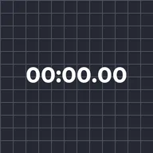

Timecode

Substitui o texto de uma camada por um relógio em movimento com o tempo da camada ou do projeto. Iniciar em e uma Velocidade negativa criam uma contagem regressiva.
Configurações
| Configuração | Tipo | Intervalo | Padrão |
|---|---|---|---|
| Formato | Opção | HH:MM:SS:FF, HH:MM:SS, MM:SS, MM:SS.hh, SS.hh, Quadros | HH:MM:SS:FF |
| Tempo | Opção | Camada, Projeto | Camada |
| Iniciar em | Número | -360000 s a 360000 s | 0 s |
| Velocidade | Número | -100 a 100 | 1 |